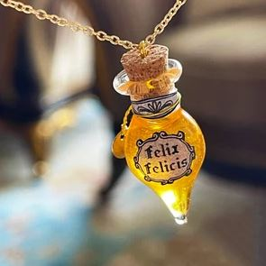

A Journey Through Learn More Potions
PART 1: Polyjuice Potion |
|
|---|---|
 |
Characteristics: This complex potion allows the drinker to take on the physical appearance of someone else for a limited time. |
| Color: Murky green. | |
| Flavor:Tastes like overcooked cabbage. | |
| Instructions:The potion requires a month to brew and includes ingredients like lacewing flies, leeches, powdered bicorn horn, and a piece of the person one wishes to become (like hair or nail clippings). | |
| Interesting Fact: The potion is notoriously difficult to brew and has many side effects if not done correctly. In "Chamber of Secrets," Harry, Ron, and Hermione use it to transform into Slytherin students, leading to humorous and dangerous situations. | |
PART 2: Felix Felicis Potion (Liquid Luck) |
|
|---|---|
|  | Characteristics: Grants the drinker extraordinary luck for a limited time, making everything they attempt succeed. |
| Color: Golden. | |
| Flavor:Sweet and syrupy. | |
| Instructions:This potion is challenging to brew and should be consumed in small quantities to avoid overconfidence and recklessness. | |
| Interesting Fact: In "Harry Potter and the Half-Blood Prince," Professor Slughorn gives Harry a vial of Felix Felicis, which he uses to successfully navigate a series of challenges. However, it’s advised not to rely on it too often, as luck can be unpredictable. | |